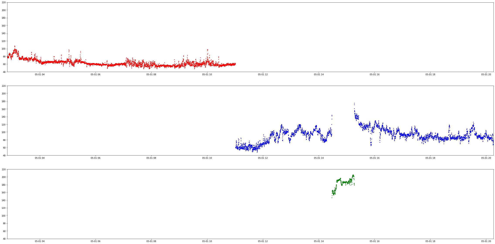
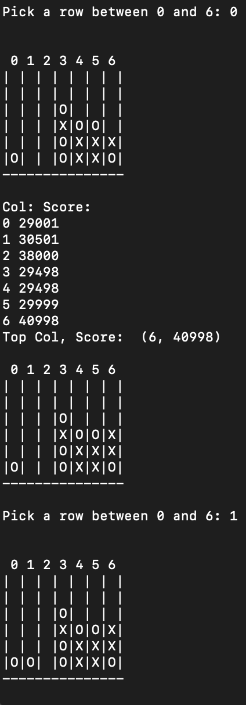
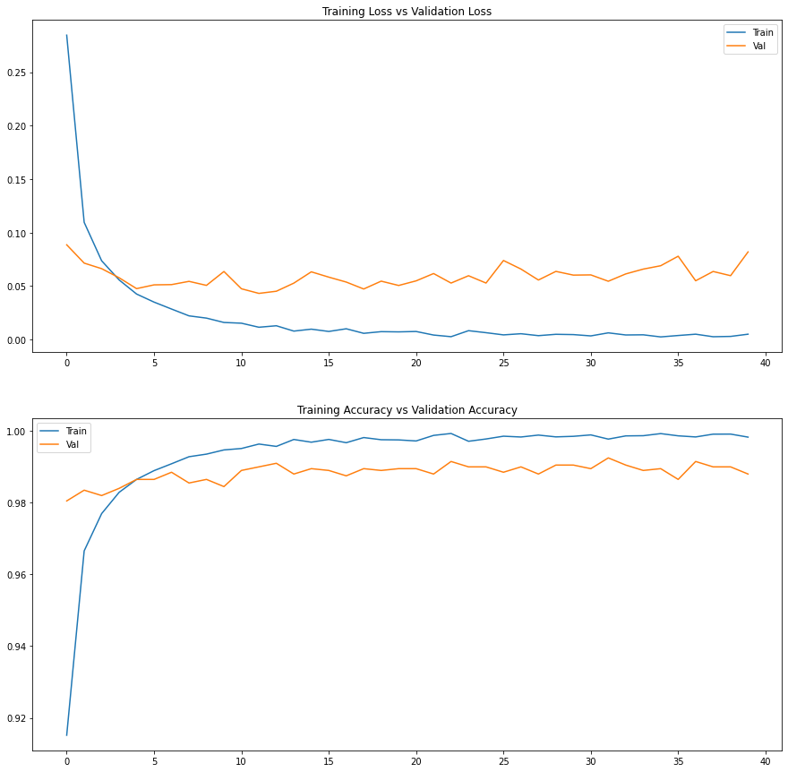

Uses KNN to detect if the user is working out, running, or at rest. The data is a day fo heart rate data from me.
The Data was pulled from the WHOOP unoffical API. The model was very simple to implemet for this, most of the work came in the data cleaning.
The data came unlabeled, with diffrent time zone, with diffrent time formats. There was a list of workouts and recored sleeps (with diffrent time zones)
that I was able to use to map the heart rate data to thie corresponding labels. What you see below if the gragh for the 3 labeled data sets, graphed over time.
The red is sleeping, Green is active, and the blue is during a workout. The model does not take time into account, as this would work too well
(gotta give yourself a little bit of a challenge).

MiniMax Connect 4 Game
This is an impleneation of the MiniMax algo for game play. This is was made with no
code copied over, all from scratch from pesudo code given here.
This works by scoring the values of future moves, and then choosing the optimal move, also
taking into account the other player playing well. My version has depth 4 (I was
limited by my laptop) This is able to beat most players, but canbe beaten. The model
Take about 5 second to pick a move to make, while a depth 3 will take under a second.
The game play in this version is not very strong(1-2 edge cases that make the game unplayable), my whole focus was one making the algo work
as it should. It also used alpha beta pruning to make the choices faster. Quite simply,
this works by skipping a claculation if it can find that it wont be used.
In the future I would work to make the game play more solid so that it can be more enjoyable. I would also consider
adding a real diaplay with a game board, but once again, not the purpose of this learning.
Pertaining to the algo, I would want to add more optimizations taht have been found to speed
up the decision making process.

Hand made Neural Network
This a hand made neural network with numpy. It uses simple numpy methods and a bit of math
to calculate infrances. It also has a rough back propigation method, that will adjust the
weights based on the loss funtion. (We'll revist a better example in the back prop section)
This network was made for predicting the winners of a tick tac toe game, and is an expansion of
a network that I made for completing boolean logic gates. Below is a snipet of some of the code,
as the ourput of this program isn't terribly facinating.
def __init__(self, x, y, test_x, test_y, num_hidden_neurons=4, lr=1):
"""Setup a Neural Network with a single hidden layer. This method
requires two vectors of x and y values as the input and output data.
"""
self._a_1 = x
self._test_x = test_x
self._test_y = test_y
self.make_weights_biases((2, 4))
self._y = y
self._output = np.zeros(self._y.shape)
self._learning_rate = lr
def load_4_layer_ttt_network(self):
self.make_weights_biases((9, 4))
def make_weights_biases(self, input_shape):
self._weights_2 = np.random.normal(size=input_shape)
self._w_grad_2 = np.zeros(self._weights_2.shape)
self._weights_3 = np.random.normal(size=(4, 1))
self._w_grad_3 = np.zeros(self._weights_3.shape)
self._biases_2 = np.random.normal(size=(1, 4))
self._biases_3 = np.random.normal(size=(1, 1))
def inference(self):
"""
Use the network to make predictions for a given vector of inputs.
This is the math to support a feedforward pass.
"""
self.h1 = sigmoid(np.dot(self._a_1, self._weights_2))
self.h2 = sigmoid(np.dot(self.h1, self._weights_3))
return self.h2
def feedforward(self):
self._output = self.inference()
def backprop(self):
d_weights2 = np.dot(self.h1.T, (2*(self._y - self._output) *
sigmoid_derivative(self._output)))*self._learning_rate
d_weights1 = np.dot(self._a_1.T, (np.dot(2 * (self._y - self._output)
* sigmoid_derivative(self._output), self._weights_3.T) *
sigmoid_derivative(self.h1)))*self._learning_rate
self._weights_2 += d_weights1
self._weights_3 += d_weights2
Genetic Algo with bug simulation
This is a very simple genetic algo implemetation. It has bugs(blue) and food (green).
The bugs go to the food and collect points for doing so. The bugs then target the next food and travel to it.
There is a speed atribute in the bug that controlls how fast it moves to the next food. At the end of the round,
the bugs who land in the top 20% of scores survive to the next round, while the rest die off.
The surviving bugs' speeds are used to get the speeds for the next generation. Each of the next bugs have
their speed mutated(either up or down) and then the next round is played and the process is repeated.
The was a fun little learning curve that this had, and it was the GUI. I had never used the
tkiner package before, but it was great to learn. It will certainly me used in future projects.
What you see below is a video from the simulation.
K Means Clustering
This is a quick implemation fo a K means clustering algo from the Scilean
pacage. This is using the popular Iris datset. This is a commen set for this algo beacause it
is very refined and allows for very high accuaries. The data are also quite small so one can look
though the data on their own to get a good sense of it. This was mostly a practice in reading and understanding
documenation. It was also good to practice some basic pandas methods. I spents lots of my time reading sources online
about k Means clustering i order to help me understand what was happening under the hood. Expect a hand made version in the near future.
I did the clasic mnist data sety with the LeNet model from the 1998 paper 'Gradient-Based Learning Applied to Document Recognition'
This is the paper teh established the initial LeNet model for image classification, and has become foundational.
I read through this and implmented the architeture with Keras. I was able to get the validation loss down to .082. I'll circle back to
this model in the future and add some data augmentation to lower the overfitting and get that loss down a bit more.
It's quite clear that there is overfitting in this model. As the training loss gets smaller, the validation
loss stays about the same. As said above, adding some data augmentation should fix this, or at least help reduce this.

Random Forest
This was a pretty simple one. the sklearn libray for this is very simple.
I used the iris data once again just to compare to the K-means model. I used a
70/30 train test split with 500 estimators, and ended up with an acuracy of 97.7%. This is
quite sutible for me. It was about in that range for the K-means. The main diffrence being,
the random forest was very very fast. With such simple calulations happening
behind the sences, it make sense. I can see the use for this when trying to
make a quick proof of concept for the importance of diffrent vars in a data set.
I'll make sure to remember this when doing EDA in the future.
def main():
X, y = datasets.load_iris( return_X_y = True)
X_train, X_test, y_train, y_test = train_test_split(X, y, test_size = 0.30)
model = RandomForestClassifier(n_estimators=500)
model.fit(X_train, y_train)
pred = model.predict(X_test)
print(confusion_matrix(y_test, pred))
print('acc: ' + str(accuracy_score(y_test, pred)))
if (__name__):
main()
RNNs/LSTMs
Here's a bit of code that I wrote for a medium artice found here.
It trains on the MDIST number handwritting dataset. It's ver simple and basic, just teh LSTM layer with a tanh activation funtion
and a SGD optimizer ay a 0.001 learning rate. This is what I found the most optimal after an hour or so of tunning. This got me to a
0.97 validation accuracy. The training was quite normal, clearly there was not vanishing gradient problem in this model. In the future I want to make a
simple vanilla RNN model and try to train it to try to get the VGP to show up in the training.
Just like a few of the projects. A bit of data augmentation would have helped out and when I do my data augmentation deep dive I'll include this in the testing. Stay tuned!